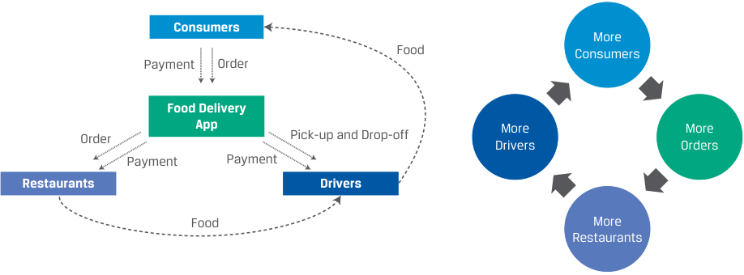

Learning Module 7 Business Models - Part 3: Business Model Types
Volume 3: Corporate Issuers
Learning Module 7 Business Models
Part 3/3: Business Model Types (PDF Pages 238–250)
Tập 3: Tổ chức Phát hành Doanh nghiệp (Corporate Issuers)
Học phần 7: Các Mô hình Kinh doanh (Business Models)
Phần 3/3: Các Loại hình Mô hình Kinh doanh (Business Model Types) (Trang PDF 238–250)
and penetrate using targeted marketing. Business opportunities often arise because established firms may not effectively serve—or even recognize— customer segments.
và thâm nhập bằng cách sử dụng hoạt động tiếp thị có mục tiêu (targeted marketing). Các cơ hội kinh doanh thường xuất hiện bởi vì các doanh nghiệp lâu đời có thể không phục vụ hiệu quả—hoặc thậm chí không nhận ra—các phân khúc khách hàng.
3
3
BUSINESS MODEL TYPES
CÁC LOẠI HÌNH MÔ HÌNH KINH DOANH (BUSINESS MODEL TYPES)
describe various types of business models
Mục tiêu học tập: mô tả các loại hình mô hình kinh doanh khác nhau (various types of business models)
Conventional Business Models
Các Mô hình Kinh doanh Truyền thống (Conventional Business Models)
Some business models are common and have existed for a long time. Alone or in combination with one another, these conventional models make up most business models in practice and are thus essential for analysts to understand. We briefly describe eight conventional models in Exhibit 5 using the framework in the prior lesson. In practice, each industry sector tends to have its own version of these conventional models, with specific features, such as “athletic apparel manufacturer.”
Một số mô hình kinh doanh rất phổ biến và đã tồn tại trong một thời gian dài. Khi đứng độc lập hoặc kết hợp với nhau, các mô hình truyền thống này cấu thành nên hầu hết các mô hình kinh doanh trên thực tế và do đó rất thiết yếu để các nhà phân tích hiểu rõ. Chúng ta mô tả ngắn gọn tám mô hình truyền thống trong Minh họa 5 (trên trang tiếp theo) bằng cách sử dụng khuôn khổ ở bài học trước. Trên thực tế, mỗi lĩnh vực ngành nghề có xu hướng có phiên bản riêng của các mô hình truyền thống này, với những đặc điểm cụ thể, chẳng hạn như “nhà sản xuất trang phục thể thao.”
Business Model Variations
Các Biến thể của Mô hình Kinh doanh (Business Model Variations)
While the conventional business models are enough to describe many companies, there are many others in practice. Most of them are simply combinations of the conventional models or industry-specific variations.
Mặc dù các mô hình kinh doanh truyền thống là đủ để mô tả nhiều công ty, nhưng vẫn có rất nhiều mô hình khác trên thực tế. Hầu hết trong số đó chỉ đơn giản là sự kết hợp của các mô hình truyền thống hoặc các biến thể đặc thù theo ngành.
-
Private label or contract manufacturers that produce goods to be marketed by others. This is a common arrangement, particularly for offshore production. Apple and NVIDIA, for example, do not manufacture their own branded products but instead contract with many specialized contract manufacturers in Asia. Apple and NIVIDIA manage a web of complex relationships, while specializing in R&D, product design, and sales and marketing.
-
Value added resellers not only distribute a product but also handle more complex aspects of product installation, customization, service, or support. This is common with complex, service-intensive products, such as construction machinery, IT hardware, and enterprise software.
-
Licensing arrangements in which a company will produce a product using someone else’s brand name in return for a royalty: This is common in toys and apparel, for example, when manufacturers might pay for the right to use the name of a famous film character, a sports team, or a brand that has become popular in a related category, such as sporting goods.
-
Franchise models in which franchisees have a tightly defined and exclusive relationship with a franchisor to operate under a specific brand with proprietary products and processes. Restaurants, retailers, and auto dealerships are common types of franchises. The franchisor earns a royalty on the franchisee’s sales. The franchisor is responsible for product development and advertising, for which it often collects an additional fee from franchisees.
-
Các nhà sản xuất nhãn hiệu riêng (private label) hoặc các nhà sản xuất theo hợp đồng (contract manufacturers) chuyên sản xuất hàng hóa để các bên khác tiếp thị. Đây là một thỏa thuận phổ biến, đặc biệt đối với hoạt động sản xuất ở nước ngoài (offshore production). Ví dụ, Apple và NVIDIA không trực tiếp sản xuất các sản phẩm mang thương hiệu của riêng mình mà thay vào đó ký hợp đồng với nhiều nhà sản xuất theo hợp đồng chuyên biệt tại châu Á. Apple và NVIDIA quản lý một mạng lưới các mối quan hệ phức tạp, đồng thời chuyên môn hóa vào R&D, thiết kế sản phẩm, cũng như bán hàng và tiếp thị.
-
Các nhà bán lại gia tăng giá trị (Value added resellers – VAR) không chỉ phân phối một sản phẩm mà còn xử lý các khía cạnh phức tạp hơn của việc lắp đặt, tùy chỉnh, dịch vụ hoặc hỗ trợ sản phẩm. Hình thức này phổ biến đối với các sản phẩm phức tạp, thâm dụng dịch vụ, chẳng hạn như máy móc xây dựng, phần cứng CNTT và phần mềm doanh nghiệp (enterprise software).
-
Các thỏa thuận cấp phép (Licensing arrangements) trong đó một công ty sẽ sản xuất một sản phẩm sử dụng tên thương hiệu của người khác để đổi lấy phí bản quyền (royalty): Điều này phổ biến trong ngành đồ chơi và may mặc, ví dụ, khi các nhà sản xuất có thể trả tiền để có quyền sử dụng tên của một nhân vật điện ảnh nổi tiếng, một đội thể thao, hoặc một thương hiệu đã trở nên phổ biến trong một danh mục liên quan, chẳng hạn như đồ dùng thể thao.
-
Các mô hình nhượng quyền thương mại (franchise models) trong đó bên nhận quyền (franchisees) có mối quan hệ độc quyền và được quy định chặt chẽ với bên nhượng quyền (franchisor) để hoạt động dưới một thương hiệu cụ thể với các sản phẩm và quy trình độc quyền. Nhà hàng, nhà bán lẻ và đại lý ô tô là những loại hình nhượng quyền phổ biến. Bên nhượng quyền thu phí bản quyền (royalty) tính trên doanh thu của bên nhận quyền. Bên nhượng quyền chịu trách nhiệm phát triển sản phẩm và quảng cáo, và thường thu một khoản phí bổ sung từ các bên nhận quyền cho các hoạt động này.
Minh họa 5: Tám Mô hình Kinh doanh Truyền thống (Exhibit 5: Conventional Business Models)
| Example | ■Total Energies, a French oil and gas producer ■L’Oréal SA, a French cosmetics and beauty company ■McKesson, a US dis- tributor of pharma- ceuticals and medical supplies ■JD.com, a Chinese first-party e-com- merce company ■Pinduoduo, a Chinese e-commerce plat- form for third-party merchants ■HSBC, a UK-based global financial ser- vices company |
|---|---|
| Key Inputs Required | ■Rights to natu- ral resources with profitable ■economics ■Technical expertise ■Raw materials ■Brands ■Creative and technical expertise ■Transportation assets ■Selection of products ■Selection of product ■Physical or digital storefront ■Large numbers of both buyers and sellers ■Digital platform ■Deposits and other sources of funding ■Borrower relationships |
| Pricing | ■Spot or forward market prices in contracts ■Price per product sold ■Subscription ■Spread on pur- chase price vs. sales price ■Delivery or service fee ■Mark-up on prod- ucts sold ■Member service fees ■Commissions ■Listing fees ■Loan and lease interest rate spread over interest rate paid for funding |
| Channel | ■Contracts with refiner or distributor, based on spot or forward prices ■Distributors ■Direct salespeople or digital ■Retailers ■Stores ■Direct salespeople or digital ■Salespeople ■Digital ■Digital ■Branches, Loan officers |
| Products | ■Usable natural resources and raw material ■Finished goods ■Transportation and storage ■Finished goods • Customer experience ■Connecting buyers and sellers ■Loans ■Leases |
| Customers | ■Refiners ■Distributors ■Distributors ■End-users (direct) ■Retailers ■End-users ■Buyers and sellers ■Borrowers |
| Conventional Model |
Natural Resource Producer Manufacturer Distributor Retailer Broker Bank |
| Mô hình Truyền thống (Conventional Model) | Khách hàng (Customers) | Sản phẩm (Products) | Kênh phân phối (Channel) | Định giá (Pricing) | Đầu vào Chính yếu Cần thiết (Key Inputs Required) | Ví dụ (Example) |
|---|---|---|---|---|---|---|
| Nhà sản xuất Tài nguyên Thiên nhiên (Natural Resource Producer) | ■ Các nhà máy lọc/chế biến (Refiners) ■ Các nhà phân phối (Distributors) |
■ Tài nguyên thiên nhiên có thể sử dụng và nguyên vật liệu thô (Usable natural resources and raw material) | ■ Hợp đồng với nhà máy lọc/chế biến hoặc nhà phân phối, dựa trên giá giao ngay hoặc giá kỳ hạn (spot or forward prices) | ■ Giá thị trường giao ngay hoặc kỳ hạn trong các hợp đồng (Spot or forward market prices in contracts) | ■ Quyền khai thác tài nguyên thiên nhiên có hiệu quả kinh tế sinh lời (Rights to natural resources with profitable economics) ■ Chuyên môn kỹ thuật (Technical expertise) |
■ Total Energies, một nhà sản xuất dầu khí của Pháp |
| Nhà sản xuất Chế tạo (Manufacturer) | ■ Các nhà phân phối (Distributors) ■ Người dùng cuối (trực tiếp) (End-users - direct) |
■ Thành phẩm (Finished goods) | ■ Các nhà phân phối (Distributors) ■ Nhân viên bán hàng trực tiếp hoặc kênh kỹ thuật số (Direct salespeople or digital) |
■ Giá trên mỗi sản phẩm bán ra (Price per product sold) ■ Thuê bao định kỳ (Subscription) |
■ Nguyên vật liệu thô (Raw materials) ■ Thương hiệu (Brands) ■ Chuyên môn sáng tạo và kỹ thuật (Creative and technical expertise) |
■ L’Oréal SA, một công ty mỹ phẩm và làm đẹp của Pháp |
| Nhà phân phối (Distributor) | ■ Các nhà bán lẻ (Retailers) | ■ Vận chuyển và lưu kho (Transportation and storage) | ■ Các nhà bán lẻ (Retailers) ■ Nhân viên bán hàng trực tiếp hoặc kênh kỹ thuật số |
■ Chênh lệch giữa giá mua và giá bán (Spread on purchase price vs. sales price) ■ Phí giao hàng hoặc phí dịch vụ (Delivery or service fee) |
■ Tài sản vận tải (Transportation assets) ■ Danh mục sản phẩm đa dạng (Selection of products) |
■ McKesson, một nhà phân phối dược phẩm và vật tư y tế của Hoa Kỳ |
| Nhà bán lẻ (Retailer) | ■ Người dùng cuối (End-users) | ■ Thành phẩm (Finished goods) ■ Trải nghiệm khách hàng (Customer experience) |
■ Các cửa hàng (Stores) ■ Nhân viên bán hàng (Salespeople) ■ Kênh kỹ thuật số (Digital) |
■ Mức cộng thêm vào giá vốn trên sản phẩm bán ra (Mark-up on products sold) ■ Phí dịch vụ thành viên (Member service fees) |
■ Danh mục sản phẩm (Selection of product) ■ Cửa hàng vật lý hoặc cửa hàng kỹ thuật số (Physical or digital storefront) |
■ JD.com, một công ty thương mại điện tử bên thứ nhất (first-party e-commerce) của Trung Quốc |
| Nhà môi giới (Broker) | ■ Người mua và người bán (Buyers and sellers) | ■ Kết nối người mua và người bán (Connecting buyers and sellers) | ■ Kênh kỹ thuật số (Digital) | ■ Hoa hồng (Commissions) ■ Phí niêm yết/đăng tin (Listing fees) |
■ Số lượng lớn cả người mua và người bán (Large numbers of both buyers and sellers) ■ Nền tảng kỹ thuật số (Digital platform) |
■ Pinduoduo, một nền tảng thương mại điện tử của Trung Quốc dành cho các thương nhân bên thứ ba |
| Ngân hàng (Bank) | ■ Người đi vay (Borrowers) | ■ Các khoản cho vay (Loans) ■ Các hợp đồng cho thuê tài chính (Leases) |
■ Kênh kỹ thuật số (Digital) ■ Chi nhánh, Cán bộ tín dụng (Branches, Loan officers) |
■ Chênh lệch lãi suất cho vay và cho thuê cao hơn lãi suất huy động vốn (Loan and lease interest rate spread over interest rate paid for funding) | ■ Tiền gửi và các nguồn huy động vốn khác (Deposits and other sources of funding) ■ Mối quan hệ với khách hàng vay (Borrower relationships) |
■ HSBC, một công ty dịch vụ tài chính toàn cầu có trụ sở tại Vương quốc Anh |
Business Model Innovation
Đổi mới Mô hình Kinh doanh (Business Model Innovation)
Most discussion of business models focuses on innovation: how new business models can be introduced or adapted to existing markets. While not requiring it, business model innovation is often combined with technological innovation and pioneered by new market entrants rather than industry incumbents.
Hầu hết các cuộc thảo luận về mô hình kinh doanh đều tập trung vào sự đổi mới sáng tạo: làm thế nào các mô hình kinh doanh mới có thể được giới thiệu hoặc điều chỉnh cho phù hợp với các thị trường hiện có. Mặc dù không bắt buộc phải đi kèm, nhưng đổi mới mô hình kinh doanh thường được kết hợp với đổi mới công nghệ và được tiên phong bởi những người mới gia nhập thị trường (new market entrants) thay vì các doanh nghiệp lâu đời trong ngành (industry incumbents).
Exhibit 6 identifies several historical cases of business model innovations in various industries. Notice how innovation becomes convention over time.
Minh họa 6 xác định một số trường hợp lịch sử về đổi mới mô hình kinh doanh trong các ngành khác nhau. Hãy chú ý cách thức sự đổi mới sáng tạo trở thành thông lệ truyền thống (convention) theo thời gian.
Exhibit 6: Business Model Innovation Historical Examples
Minh họa 6: Các Ví dụ Lịch sử về Đổi mới Mô hình Kinh doanh (Exhibit 6: Business Model Innovation Historical Examples)
| Industry | Business Model Innovation | Innovative Features |
|---|---|---|
| Airlines | ■Low-cost and ultra-low-cost airlines | ■Customer: leisure, mass market ■Product: Point-to-point flights ■Low prices ■No frills, low costs ■Channel: direct, digital sales |
| Software | ■Software as a service (SaaS) | ■Price: monthly fees rather than upfront license ■Customer: broader, owingtopricing |
| Retailing | ■Discount retailing ■E-commerce ■Digital marketplaces |
■Prices ■Product selection ■Channel |
| Securities brokerage | ■Discount brokers | ■Customer: individuals ■Low or free commissions ■No extra services or research, low costs ■Channel: direct, digital sales |
| Ngành (Industry) | Đổi mới Mô hình Kinh doanh (Business Model Innovation) | Các Đặc điểm Đổi mới (Innovative Features) |
|---|---|---|
| Hàng không (Airlines) | ■ Các hãng hàng không giá rẻ và siêu rẻ (Low-cost and ultra-low-cost airlines) | ■ Khách hàng: du lịch giải trí, thị trường đại chúng (leisure, mass market) ■ Sản phẩm: Các chuyến bay thẳng điểm-tới-điểm (Point-to-point flights) ■ Giá thấp (Low prices) ■ Không có dịch vụ rườm rà, chi phí thấp (No frills, low costs) ■ Kênh phân phối: bán hàng trực tiếp, kỹ thuật số (direct, digital sales) |
| Phần mềm (Software) | ■ Phần mềm như một dịch vụ (Software as a service – SaaS) | ■ Giá: phí hàng tháng thay vì phí cấp phép trả trước (monthly fees rather than upfront license) ■ Khách hàng: rộng hơn, nhờ vào cách định giá (broader, owing to pricing) |
| Bán lẻ (Retailing) | ■ Bán lẻ chiết khấu (Discount retailing) ■ Thương mại điện tử (E-commerce) ■ Sàn giao dịch kỹ thuật số (Digital marketplaces) |
■ Giá cả (Prices) ■ Sự lựa chọn sản phẩm (Product selection) ■ Kênh phân phối (Channel) |
| Môi giới chứng khoán (Securities brokerage) | ■ Các công ty môi giới chiết khấu (Discount brokers) | ■ Khách hàng: cá nhân (individuals) ■ Hoa hồng thấp hoặc miễn phí (Low or free commissions) ■ Không có dịch vụ phụ trợ hoặc nghiên cứu, chi phí thấp (No extra services or research, low costs) ■ Kênh phân phối: bán hàng trực tiếp, kỹ thuật số (direct, digital sales) |
Digital technology has generated many new products, such as streaming video, digital advertising, social media, and dating apps and has enabled many business model innovations, such as digital marketplaces. While large-scale business model innovation did not start with digital technology, the rapid and open-ended advance of digital technology has dramatically changed how businesses operate by radically reducing the cost of communicating, exchanging information, and financially transacting. This had several direct implications for many businesses:
Công nghệ số đã tạo ra nhiều sản phẩm mới, chẳng hạn như video phát trực tuyến (streaming video), quảng cáo kỹ thuật số, mạng xã hội và các ứng dụng hẹn hò, đồng thời tạo điều kiện cho nhiều đổi mới mô hình kinh doanh, chẳng hạn như các sàn giao dịch kỹ thuật số (digital marketplaces). Mặc dù đổi mới mô hình kinh doanh trên quy mô lớn không bắt đầu từ công nghệ số, nhưng sự tiến bộ nhanh chóng và không giới hạn của công nghệ số đã thay đổi sâu sắc cách thức các doanh nghiệp vận hành bằng cách cắt giảm triệt để chi phí giao tiếp, trao đổi thông tin và giao dịch tài chính. Điều này có một số hàm ý trực tiếp đối với nhiều doanh nghiệp:
-
Location matters less. Digital communications and e-commerce enable customers to shop and purchase more easily from firms having no local physical presence.
-
Outsourcing is easier, for similar reasons.
-
Digital marketing makes it easy and cost effective to reach very specific groups of customers, regardless of location, and to engage more deeply with them than was possible with traditional advertising.
-
Network effects, discussed next, have become more powerful and accessible to more firms.
-
Vị trí địa lý ít quan trọng hơn (Location matters less). Truyền thông kỹ thuật số và thương mại điện tử cho phép khách hàng mua sắm dễ dàng hơn từ những doanh nghiệp không có sự hiện diện vật lý tại địa phương.
-
Thuê ngoài dễ dàng hơn (Outsourcing is easier), vì những lý do tương tự.
-
Tiếp thị kỹ thuật số (Digital marketing) giúp việc tiếp cận các nhóm khách hàng rất cụ thể trở nên dễ dàng và hiệu quả về mặt chi phí, bất kể vị trí địa lý, đồng thời tương tác sâu sắc hơn với họ so với những gì có thể làm được bằng quảng cáo truyền thống.
-
Hiệu ứng mạng lưới (Network effects), được thảo luận tiếp theo, đã trở nên mạnh mẽ hơn và dễ tiếp cận hơn đối với nhiều doanh nghiệp hơn.
Network Effects and Platform Business Models
Hiệu ứng Mạng lưới và Mô hình Kinh doanh Nền tảng (Network Effects and Platform Business Models)
Network effects refer to the increase in value of a network to its users as more users join. Many internet-based businesses are built on network effects; for example, China’s WeChat messaging and payment platform is valuable to its users in large part because it is used by so many people. Once it achieved a high enough number of users, it also became available to marginal users, further increasing user growth. Online classifieds, social media, and ride-sharing services are other examples. Network effects capitalize on both economics of scale and scope. Network effects are also at work in many older, pre-internet businesses, such as telephone service, payment systems including credit cards, and financial infrastructure, such as stock exchanges. In all these businesses, the key metric is the number of users and the growth rate of users.
Hiệu ứng mạng lưới (Network effects) đề cập đến sự gia tăng giá trị của một mạng lưới đối với người dùng khi có thêm nhiều người dùng tham gia. Nhiều doanh nghiệp dựa trên internet được xây dựng trên hiệu ứng mạng lưới; ví dụ, nền tảng nhắn tin và thanh toán WeChat của Trung Quốc có giá trị đối với người dùng phần lớn là vì nó được sử dụng bởi rất nhiều người.Một khi đạt được số lượng người dùng đủ cao, nó cũng trở nên khả dụng đối với những người dùng cận biên (marginal users), làm tăng thêm tốc độ tăng trưởng người dùng. Các trang rao vặt trực tuyến (online classifieds), mạng xã hội và dịch vụ chia sẻ chuyến đi là những ví dụ khác. Hiệu ứng mạng lưới tận dụng cả lợi thế kinh tế theo quy mô (economies of scale) và lợi thế kinh tế theo phạm vi (economies of scope). Hiệu ứng mạng lưới cũng phát huy tác dụng trong nhiều ngành kinh doanh lâu đời có từ trước thời kỳ internet, chẳng hạn như dịch vụ điện thoại, hệ thống thanh toán bao gồm thẻ tín dụng, và cơ sở hạ tầng tài chính như các sở giao dịch chứng khoán. Trong tất cả các doanh nghiệp này, chỉ số đo lường then chốt (key metric) là số lượng người dùng và tốc độ tăng trưởng người dùng.
“One-sided” network effects apply in networks where it is only one type of user that is valuable to other users: for example, telephone services and peer-to-peer payment systems, such as Venmo, a mobile app owned by PayPal that enables users to easily transfer, deposit, and withdraw money. Connections between users are crucial, but there is one type of user. Depending on the size and the connections of the network, the marginal cost of acquiring each additional user is lower than the revenue generated by adding the user to the network.
Hiệu ứng mạng lưới “một phía” (“One-sided” network effects) áp dụng trong các mạng lưới nơi chỉ có một loại người dùng mang lại giá trị cho những người dùng khác: ví dụ, dịch vụ điện thoại và hệ thống thanh toán ngang hàng (peer-to-peer payment systems), chẳng hạn như Venmo, một ứng dụng di động thuộc sở hữu của PayPal cho phép người dùng dễ dàng chuyển, gửi và rút tiền. Sự kết nối giữa những người dùng là yếu tố tối quan trọng, nhưng chỉ có một loại người dùng. Tùy thuộc vào quy mô và mức độ kết nối của mạng lưới, chi phí biên để thu hút thêm mỗi người dùng bổ sung (marginal cost of acquiring each additional user) thấp hơn doanh thu tạo ra từ việc bổ sung người dùng đó vào mạng lưới.
In some cases, networks are composed of two or more types of users, which can be described as “two-sided” or “multi-sided” networks, such as buyers and sellers in an online marketplace. The typical example for these multi-sided platforms includes credit and debit card networks, such as Visa and China Union Pay, composed of both merchant and cardholder users. Other examples include digital marketplaces, such as Airbnb, composed of both hosts and guests. As these multi-sided networks grow— more users join the service, which attracts more merchants, which in turn attracts more users—these businesses can grow exponentially. The growth of food delivery services connects restaurants, independent drivers, and customers and has evolved through multiple interdependent network effects. As each of the three groups has grown, they in turn increase the aggregate size of their networks, as Exhibit 7 shows. Network effects create strong barriers to entry and are a form of competitive advantage.
Trong một số trường hợp, các mạng lưới được cấu thành từ hai hoặc nhiều loại người dùng, có thể được mô tả là mạng lưới “hai phía” (“two-sided”) hoặc “đa phía” (“multi-sided”), chẳng hạn như người mua và người bán trên một sàn giao dịch trực tuyến. Ví dụ điển hình cho các nền tảng đa phía này bao gồm các mạng lưới thẻ tín dụng và thẻ ghi nợ, chẳng hạn như Visa và China UnionPay, bao gồm cả người dùng là đơn vị chấp nhận thẻ (merchants) và chủ thẻ (cardholders). Các ví dụ khác bao gồm các sàn giao dịch kỹ thuật số như Airbnb, bao gồm cả chủ nhà (hosts) và khách lưu trú (guests). Khi các mạng lưới đa phía này phát triển—nhiều người dùng tham gia dịch vụ hơn, thu hút nhiều thương nhân hơn, và ngược lại thu hút thêm nhiều người dùng hơn nữa—những doanh nghiệp này có thể tăng trưởng theo cấp số nhân (grow exponentially). Sự phát triển của các dịch vụ giao đồ ăn kết nối các nhà hàng, tài xế độc lập và khách hàng, đồng thời đã tiến hóa thông qua nhiều hiệu ứng mạng lưới phụ thuộc lẫn nhau. Khi mỗi nhóm trong ba nhóm này phát triển, đến lượt mình họ lại làm tăng quy mô tổng thể của mạng lưới, như Minh họa 7 cho thấy. Hiệu ứng mạng lưới tạo ra các rào cản gia nhập ngành mạnh mẽ và là một dạng lợi thế cạnh tranh.
Exhibit 7: Multiple Network Effects for Multi-Sided Platforms
Minh họa 7: Đa Hiệu ứng Mạng lưới đối với các Nền tảng Đa phía (Exhibit 7: Multiple Network Effects for Multi-Sided Platforms)

Chú thích hình ảnh: - Trung tâm: Ứng dụng Giao Đồ ăn (Food Delivery App). - Ba nhóm người dùng tương tác: 1. Người tiêu dùng (Consumers): Đặt hàng (Order) & Thanh toán (Payment) qua ứng dụng $\rightarrow$ Nhận Đồ ăn (Food) từ Tài xế. 2. Nhà hàng (Restaurants): Nhận Đơn hàng (Order) & Thanh toán (Payment) từ ứng dụng $\rightarrow$ Giao Đồ ăn (Food) cho Tài xế. 3. Tài xế (Drivers): Nhận thông tin Nhận và Giao hàng (Pick-up and Drop-off) cùng Thanh toán (Payment) từ ứng dụng. - Vòng lặp hiệu ứng mạng lưới: Nhiều Người tiêu dùng hơn (More Consumers) $\rightarrow$ Nhiều Đơn hàng hơn (More Orders) $\rightarrow$ Nhiều Tài xế hơn (More Drivers) $\rightarrow$ Nhiều Nhà hàng hơn (More Restaurants) $\rightarrow$ thu hút thêm Nhiều Người tiêu dùng hơn.
Network business models often include crowdsourcing , where users contribute directly to a product or service. Examples include social media, such as TikTok/Douyin and Reddit; open-source software; knowledge aggregators, such as Wikipedia; and customer reviews and feedback on, for example, Yelp, Amazon, and TripAdvisor. These businesses facilitate “user communities” that enable voluntary collaboration between users of a product with a small amount of moderation and oversight by the company.
Các mô hình kinh doanh mạng lưới thường bao gồm hình thức huy động nguồn lực từ cộng đồng (crowdsourcing), nơi người dùng đóng góp trực tiếp vào một sản phẩm hoặc dịch vụ. Các ví dụ bao gồm mạng xã hội như TikTok/Douyin và Reddit; phần mềm mã nguồn mở; các trang tổng hợp tri thức (knowledge aggregators) như Wikipedia; cùng các đánh giá và phản hồi của khách hàng trên Yelp, Amazon và TripAdvisor. Những doanh nghiệp này tạo điều kiện cho các “cộng đồng người dùng” (“user communities”) cho phép sự hợp tác tự nguyện giữa những người sử dụng sản phẩm với một mức độ điều phối và giám sát nhỏ từ phía công ty.
EXAMPLE 7
VÍ DỤ 7 (EXAMPLE 7)
Business Model Evolution in the Hotel and Travel Industry
Sự Tiến hóa của Mô hình Kinh doanh trong Ngành Khách sạn và Du lịch (Business Model Evolution in the Hotel and Travel Industry)
The hotel industry provides a good illustration of business model evolution over time and the emergence of different business models, with varying financial characteristics. Until the 20th century, business model evolution was slow. In response to increasing scale and specialization demanded by a growing market, hotels became larger and more numerous but with little change in the basic business model. The 20th century brought major changes to business models in the industry. The single-property hotel business remained a relevant business model, due to the inherent uniqueness of certain hotel properties.
Ngành công nghiệp khách sạn cung cấp một minh họa điển hình về sự tiến hóa của mô hình kinh doanh theo thời gian và sự xuất hiện của các mô hình kinh doanh khác nhau, với các đặc điểm tài chính đa dạng. Cho đến thế kỷ 20, sự tiến hóa của mô hình kinh doanh diễn ra chậm chạp. Để đáp ứng quy mô ngày càng tăng và sự chuyên môn hóa được đòi hỏi bởi một thị trường đang phát triển, các khách sạn trở nên lớn hơn và nhiều hơn về số lượng nhưng có rất ít sự thay đổi trong mô hình kinh doanh cơ bản. Thế kỷ 20 đã mang lại những thay đổi lớn đối với các mô hình kinh doanh trong ngành này. Mô hình kinh doanh khách sạn đơn lẻ (single-property hotel business) vẫn là một mô hình kinh doanh phù hợp, do tính độc đáo vốn có của một số bất động sản khách sạn nhất định.
However, with a much larger and highly mobile customer base, hotel operators saw an opportunity, with the need to serve a growing corporate travel market, increase the scale and footprint of their businesses, and provide convenience and consistency to customers, thereby increasing operating efficiency. Some specific examples are outlined below.
Tuy nhiên, với một tệp khách hàng lớn hơn nhiều và có tính di động cao, các nhà điều hành khách sạn đã nhìn thấy cơ hội, cùng nhu cầu phục vụ thị trường du lịch công tác (corporate travel market) đang phát triển, tăng quy mô và phạm vi hiện diện của doanh nghiệp, đồng thời mang lại sự thuận tiện và tính nhất quán cho khách hàng, qua đó nâng cao hiệu quả hoạt động. Một số ví dụ cụ thể được nêu dưới đây.
| Impact | Example | |
|---|---|---|
| Scale | Large, global hotel chains and brands with multiple locations that serve highly mobile customers in numerous market segments. |
Intercontinental Hotels & Resorts has more than 15 brands in approximately 6,000 locations. Brands range from basic to luxury and extended stay. |
| Specialization | Specialized lodging businesses to serve specific market segments |
Resort hotels, vacation packages (bundled flights + lodging + meals), casinos, weekly/monthly accommoda- tion (for out-of-town executives) |
| Franchising | Applying the franchise approach to the hotel business |
Most Hilton Hotels properties are not owned or leased by Hilton but are operated by franchisees who pay fees. |
| Functional separation |
Specialized businesses handling such func- tions as branding and marketing, property ownership, management, and development |
REITs and property ownership: The largest hotel com- panies seldom own all their hotels; some own none. Host Hotels & Resorts, the world’s largest hotel REIT, owns close to 100 hotel properties and is the largest third-party owner of Marriott and Hyatt hotels. |
| Fractionalized ownership |
Fractionalized ownership in the form of time-sharing, creating a new lodging cat- egory between the hotel and the vacation home |
Wyndham Destinations is the largest vacation own- ership company. The company develops, sells, and manages time-share properties under various vacation ownership clubs. |
| Loyalty programs | The introduction of programs to increase brand loyalty among high-value, frequent travelers |
Hotel loyalty programs first introduced by Holiday Inn and Marriott in 1983 |
| Tác động (Impact) | Mô tả | Ví dụ (Example) |
|---|---|---|
| Quy mô (Scale) | Các chuỗi và thương hiệu khách sạn lớn trên toàn cầu với nhiều địa điểm phục vụ những khách hàng có tính di động cao thuộc nhiều phân khúc thị trường. | Intercontinental Hotels & Resorts có hơn 15 thương hiệu tại khoảng 6,000 địa điểm. Các thương hiệu trải dài từ cơ bản đến sang trọng và lưu trú dài ngày (extended stay). |
| Chuyên môn hóa (Specialization) | Các doanh nghiệp lưu trú chuyên biệt để phục vụ các phân khúc thị trường cụ thể. | Khách sạn nghỉ dưỡng (resort hotels), gói kỳ nghỉ trọn gói (vé máy bay + chỗ ở + bữa ăn), sòng bạc, chỗ ở theo tuần/tháng (dành cho các giám đốc điều hành đi công tác xa). |
| Nhượng quyền thương mại (Franchising) | Áp dụng cách tiếp cận nhượng quyền thương mại vào kinh doanh khách sạn. | Hầu hết các bất động sản của Hilton Hotels không thuộc sở hữu hoặc được thuê bởi Hilton mà được vận hành bởi các bên nhận quyền thương mại (franchisees) có trả phí. |
| Tách biệt chức năng (Functional separation) | Các doanh nghiệp chuyên biệt xử lý các chức năng như xây dựng thương hiệu và tiếp thị, sở hữu bất động sản, quản lý và phát triển dự án. | Các quỹ tín thác đầu tư bất động sản (REIT) và quyền sở hữu bất động sản: Các công ty khách sạn lớn nhất hiếm khi sở hữu tất cả các khách sạn của họ; một số công ty không sở hữu khách sạn nào. Host Hotels & Resorts, quỹ REIT khách sạn lớn nhất thế giới, sở hữu gần 100 bất động sản khách sạn và là chủ sở hữu bên thứ ba lớn nhất đối với các khách sạn mang thương hiệu Marriott và Hyatt. |
| Sở hữu theo phần (Fractionalized ownership) | Sở hữu theo phần dưới hình thức chia sẻ kỳ nghỉ (time-sharing), tạo ra một danh mục lưu trú mới nằm giữa khách sạn và ngôi nhà nghỉ dưỡng. | Wyndham Destinations là công ty sở hữu kỳ nghỉ lớn nhất. Công ty phát triển, bán và quản lý các bất động sản chia sẻ kỳ nghỉ dưới tên nhiều câu lạc bộ sở hữu kỳ nghỉ khác nhau. |
| Chương trình khách hàng thân thiết (Loyalty programs) | Sự ra đời của các chương trình nhằm gia tăng lòng trung thành với thương hiệu trong nhóm những người đi du lịch thường xuyên, mang lại giá trị cao. | Các chương trình khách hàng thân thiết của khách sạn lần đầu tiên được giới thiệu bởi Holiday Inn và Marriott vào năm 1983. |
The digital transformation of business models has also impacted the hotel business. To increase the efficiency in marketing and distribution of hotel and travel-related services, Online Travel Agency (OTA) reducedthe complexities of travel planning and bookings. In both its traditional and online forms, the travel agency business is a two-sided network.
Quá trình chuyển đổi số (digital transformation) của các mô hình kinh doanh cũng đã tác động đến ngành kinh doanh khách sạn. Để tăng hiệu quả trong việc tiếp thị và phân phối các dịch vụ khách sạn và liên quan đến du lịch, Đại lý Du lịch Trực tuyến (Online Travel Agency – OTA) đã giảm bớt sự phức tạp của việc lập kế hoạch và đặt chỗ du lịch. Ở cả hình thức truyền thống lẫn trực tuyến, ngành kinh doanh đại lý du lịch đều là một mạng lưới hai phía (two-sided network).
Like a traditional travel agent, OTA assists travelers with research and planning, price comparisons, bookings, and logistics. For hotels, it provides exposure, leads, bookings, customer information, feedback, and competitive intelligence. Automating these functions and delivering them as a web-based service so greatly improved their convenience, speed, and efficiency that the business model was transformed, shifting the relationship and the balance of power between agencies and their hotel customers. Effectively, through network
Giống như một đại lý du lịch truyền thống, OTA hỗ trợ du khách trong việc tìm hiểu và lập kế hoạch, so sánh giá cả, đặt phòng và hậu cần. Đối với các khách sạn, OTA mang lại sự tiếp cận khách hàng (exposure), khách hàng tiềm năng (leads), lượt đặt phòng, thông tin khách hàng, phản hồi và thông tin tình báo cạnh tranh (competitive intelligence). Việc tự động hóa các chức năng này và cung cấp chúng dưới dạng một dịch vụ trên nền tảng web đã cải thiện đáng kể sự thuận tiện, tốc độ và hiệu quả đến mức mô hình kinh doanh đã được chuyển đổi hoàn toàn, làm dịch chuyển mối quan hệ và cán cân quyền lực giữa các đại lý và khách hàng khách sạn của họ. Trên thực tế, thông qua hiệu ứng mạng lưới,
effects, OTA disintermediated the traditional travel agency model and forced the remaining agencies to specialize. Examples of differing OTA business models are shown below.
OTA đã loại bỏ vai trò trung gian (disintermediated) của mô hình đại lý du lịch truyền thống và buộc các đại lý còn lại phải chuyên môn hóa. Các ví dụ về những mô hình kinh doanh OTA khác nhau được trình bày dưới đây.
| OTA Business Model | Description | Examples |
|---|---|---|
| Price-comparison “aggregators” | These network-based businesses offer buyers and sellers in the hotel and travel community travel-related price comparison services and bookings. |
Booking.com, Expedia, Ctrip, eDreams |
| Crowdsourcing | These platform businesses provide crowd- sourced reviews and information on hotels and other travel services. |
TripAdvisor.com |
| Home sharing/short-term rental service |
These platform businesses have challenged and disrupted the traditional hotel model by supplying a variety of temporary, often unique, accommodations. |
Airbnb; Vrbo (acquired in 2006 by HomeAway, which in turn was acquired by Expedia in 2015) |
| Mô hình Kinh doanh OTA (OTA Business Model) | Mô tả (Description) | Ví dụ (Examples) |
|---|---|---|
| Các trang tổng hợp so sánh giá (Price-comparison “aggregators”) | Các doanh nghiệp dựa trên mạng lưới này cung cấp cho người mua và người bán trong cộng đồng khách sạn và du lịch các dịch vụ so sánh giá và đặt chỗ liên quan đến du lịch. | Booking.com, Expedia, Ctrip, eDreams |
| Huy động nguồn lực từ cộng đồng (Crowdsourcing) | Các doanh nghiệp nền tảng này cung cấp các đánh giá và thông tin do cộng đồng đóng góp về các khách sạn và dịch vụ du lịch khác. | TripAdvisor.com |
| Dịch vụ chia sẻ nhà ở / cho thuê ngắn hạn (Home sharing/short-term rental service) | Các doanh nghiệp nền tảng này đã thách thức và làm đảo lộn mô hình khách sạn truyền thống bằng cách cung cấp nhiều loại chỗ ở tạm thời, thường mang tính độc đáo. | Airbnb; Vrbo (được mua lại vào năm 2006 bởi HomeAway, và sau đó HomeAway được mua lại bởi Expedia vào năm 2015) |
| Hotel operators have responded to these challenges by investing in their |
|---|
| own websites, customer data, and direct booking capabilities or selling directly |
| to various sites. Some traditional hotel chains, which have historically empha- |
| sized consistency and uniformity, have launched so-called soft brands, which |
| are hotels that operate under their own name but with a greater degree of local operator autonomy. Moreover, they have created hybrid hotel solutions, such |
| as condo-hotels (condos in a hotel that are at the disposal of the owner but are rented out otherwise by the hotel). |
Các nhà điều hành khách sạn đã phản ứng lại những thách thức này bằng cách đầu tư vào trang web của riêng họ, dữ liệu khách hàng và năng lực đặt phòng trực tiếp hoặc bán trực tiếp cho nhiều trang web khác nhau. Một số chuỗi khách sạn truyền thống—vốn trong lịch sử luôn đề cao tính nhất quán và đồng bộ—đã ra mắt những gì được gọi là các thương hiệu mềm (soft brands), tức là những khách sạn hoạt động dưới tên riêng của chúng nhưng có mức độ tự chủ cao hơn cho nhà điều hành địa phương. Hơn nữa, họ đã tạo ra các giải pháp khách sạn lai (hybrid hotel solutions), chẳng hạn như căn hộ khách sạn (condo-hotels — các căn hộ chung cư nằm trong một khách sạn thuộc quyền sử dụng của chủ sở hữu nhưng được khách sạn cho thuê trong thời gian chủ sở hữu không dùng đến).
QUESTION SET
BỘ CÂU HỎI (QUESTION SET)
Bynta is a new entrant in the retail clothing industry. It is competing against Ocean Hill Inc., an established industry incumbent that uses a conventional business model.
Bynta là một công ty mới gia nhập ngành bán lẻ quần áo. Công ty đang cạnh tranh với Ocean Hill Inc., một doanh nghiệp lâu đời trong ngành sử dụng mô hình kinh doanh truyền thống.
- What attributes of a conventional retail business model will Bynta and Ocean Hill Inc. likely share?
- Những thuộc tính nào của một mô hình kinh doanh bán lẻ truyền thống mà Bynta và Ocean Hill Inc. có khả năng sẽ có điểm chung?
Lời giải:
Solution:
Bốn thành phần chính của khuôn khổ mô hình kinh doanh là khách hàng, sản phẩm, kênh phân phối và định giá. Bynta và Ocean Hill Inc. có khả năng sẽ giống nhau ở chỗ khách hàng của họ sẽ là người dùng cuối của sản phẩm, sản phẩm của họ sẽ là thành phẩm (finished goods), và việc định giá của họ sẽ dựa trên mức cộng thêm vào giá vốn (markup) trên các sản phẩm bán ra.
The four major components of a business model framework are customers, products, channels, and pricing. Bynta and Ocean Hill Inc. will likely be similar in that their customers will be end users of the products, their products will be finished goods, and their pricing will be based on markup on products sold.
- Điều gì rất có khả năng sẽ làm nên sự khác biệt của Bynta so với Ocean Hill Inc.?
- What most likely would distinguish Bynta from Ocean Hill Inc.? Solution:
Lời giải:
Bynta can distinguish itself from Ocean Hill Inc. by using digital technology to reduce the cost of communicating, exchanging information, and financially transacting. With digital technology, location matters less because e-commerce allows for shopping and purchasing without the need for a physical storefront.
Bynta có thể tạo sự khác biệt so với Ocean Hill Inc. bằng cách sử dụng công nghệ số để giảm chi phí giao tiếp, trao đổi thông tin và giao dịch tài chính. Với công nghệ số, vị trí địa lý ít quan trọng hơn bởi vì thương mại điện tử cho phép mua sắm và thanh toán mà không cần đến một cửa hàng vật lý (physical storefront).
Outsourcing to private label or contract manufacturers is also made easier with digital technology and will allow Bynta to focus more on product design, sales, and marketing.
Việc thuê ngoài cho các nhà sản xuất nhãn hiệu riêng hoặc nhà sản xuất theo hợp đồng (contract manufacturers) cũng trở nên dễ dàng hơn nhờ công nghệ số và sẽ cho phép Bynta tập trung nhiều hơn vào thiết kế sản phẩm, bán hàng và tiếp thị.
| Improved customer segmentation is also enabled by digital technology, allowing for segments that are narrower and unique to Bynta’s product categories. Digital technology in marketing will make it easier and more cost effective for Bynta to reach very specific customer segments, regard- less of location, and to engage more deeply with them than is possible with traditional advertising. Sophisticated market analytics can be used to break out smaller, homogeneous markets. This will allow Bynta to identify cus- tomer cohorts across geographies and combine them into larger homoge- neous markets that are easier to access and penetrate using targeted digital advertising. Bynta can also benefit from network effects and crowdsourcing by facili- tating user communities that enable voluntary collaboration between its customers. |
|---|
| 3. Given an increase in the price of raw materials/commodities, what is the dif- ference in revenue/profit impact for producers versus manufacturers versus distributors and retailers? Solution: A supply chain includes all the steps involved in producing and delivering a physical product to the end customer, regardless of whether those steps are performed by a single firm. Different firms at different points in the supply chain may attempt to mitigate the impact of raw materials/commodity price increases in different ways. Some firms may try to stabilize revenues by entering long-term customer or hedging contracts. While these are often available for firms at the beginning of the supply chain, where there are established markets for contracts on raw materials, it is less possible further down the chain. For example, producers that sell nat- ural resources or commodities and manufacturers that buy them can enter derivative contracts in the forward markets to secure more stable pricing for the products they sell or the key inputs that they need. Further down the supply chain, distributors and retailers may secure long- term contracts to ensure stabilized prices, though they are unlikely to have access to structured and highly liquid derivative contracts. The manufactur- ing stage of the supply chain creates products that are too differentiated to support broad derivative markets as there are with commodities. One risk is that if a firm locks in a sale price for its products while not locking in a purchase price for its raw material key inputs, it faces the risk of substantial loss if the cost of raw materials increases in the spot market. Some firms may attempt to minimize fixed operating costs—for example, through outsourcing or flexible contracts with workers and suppliers. Firms whose revenue/profit may be impacted by fluctuations in materials prices may also use more conservative capital structure policies, with rela- tively little debt and therefore smaller fixed financing obligations compared with firms that are less sensitive to such fluctuations. |
Việc phân khúc khách hàng được cải thiện cũng được hỗ trợ bởi công nghệ số, cho phép tạo ra các phân khúc hẹp hơn và mang tính đặc thù đối với các danh mục sản phẩm của Bynta. Công nghệ số trong tiếp thị sẽ giúp Bynta tiếp cận các phân khúc khách hàng rất cụ thể một cách dễ dàng hơn và hiệu quả hơn về mặt chi phí, bất kể vị trí địa lý, đồng thời tương tác sâu sắc hơn với họ so với những gì có thể làm được bằng quảng cáo truyền thống. Các phương pháp phân tích thị trường tinh vi có thể được sử dụng để chia nhỏ thành các thị trường đồng nhất có quy mô nhỏ hơn. Điều này sẽ cho phép Bynta xác định các nhóm khách hàng có chung đặc điểm qua các vùng địa lý và kết hợp họ thành những thị trường đồng nhất lớn hơn, dễ tiếp cận và thâm nhập hơn bằng cách sử dụng quảng cáo kỹ thuật số có mục tiêu.
Bynta cũng có thể hưởng lợi từ hiệu ứng mạng lưới (network effects) và huy động nguồn lực từ cộng đồng (crowdsourcing) bằng cách tạo điều kiện cho các cộng đồng người dùng cho phép sự hợp tác tự nguyện giữa các khách hàng của mình.
- Khi có sự gia tăng giá của nguyên vật liệu thô/hàng hóa cơ bản (raw materials/commodities), sự khác biệt về tác động lên doanh thu/lợi nhuận đối với các nhà sản xuất tài nguyên (producers) so với các nhà sản xuất chế tạo (manufacturers) so với các nhà phân phối và nhà bán lẻ (distributors and retailers) là gì?
Lời giải:
Một chuỗi cung ứng (supply chain) bao gồm tất cả các bước liên quan đến việc sản xuất và giao một sản phẩm vật lý đến tay khách hàng cuối cùng, bất kể các bước đó có được thực hiện bởi một doanh nghiệp đơn lẻ hay không. Các doanh nghiệp khác nhau ở những điểm khác nhau trong chuỗi cung ứng có thể tìm cách giảm thiểu tác động của việc tăng giá nguyên vật liệu thô/hàng hóa cơ bản theo những cách khác nhau. Một số doanh nghiệp có thể cố gắng ổn định doanh thu bằng cách ký kết các hợp đồng khách hàng dài hạn hoặc hợp đồng phòng ngừa rủi ro (hedging contracts).
Mặc dù các công cụ này thường sẵn có đối với các doanh nghiệp ở đầu chuỗi cung ứng—nơi có các thị trường phát triển lâu đời cho các hợp đồng nguyên vật liệu thô—nhưng điều này ít khả thi hơn khi đi sâu xuống phía dưới chuỗi cung ứng. Ví dụ, các nhà sản xuất bán tài nguyên thiên nhiên hoặc hàng hóa cơ bản và các nhà sản xuất chế tạo mua chúng có thể tham gia vào các hợp đồng phái sinh (derivative contracts) trên thị trường kỳ hạn (forward markets) để đảm bảo mức giá ổn định hơn cho các sản phẩm họ bán hoặc các yếu tố đầu vào chính mà họ cần.
Questions 4 and 5 expand on the earlier example of business model evolution in the hotel and travel industry.
Đi sâu hơn xuống chuỗi cung ứng, các nhà phân phối và nhà bán lẻ có thể ký kết các hợp đồng dài hạn để đảm bảo mức giá ổn định, mặc dù họ ít có khả năng tiếp cận được các hợp đồng phái sinh có cấu trúc và tính thanh khoản cao. Giai đoạn sản xuất chế tạo của chuỗi cung ứng tạo ra những sản phẩm có mức độ khác biệt hóa quá cao nên không thể hỗ trợ các thị trường phái sinh rộng lớn như đối với hàng hóa cơ bản.
Một rủi ro là nếu một doanh nghiệp khóa cố định (locks in) mức giá bán cho sản phẩm của mình trong khi không khóa cố định mức giá mua cho các yếu tố đầu vào nguyên vật liệu thô chính yếu, doanh nghiệp đó sẽ phải đối mặt với rủi ro thua lỗ lớn nếu chi phí nguyên vật liệu thô tăng lên trên thị trường giao ngay (spot market).
Một số doanh nghiệp có thể tìm cách tối thiểu hóa chi phí hoạt động cố định—ví dụ, thông qua việc thuê ngoài (outsourcing) hoặc ký các hợp đồng linh hoạt với người lao động và nhà cung cấp.
Các doanh nghiệp có doanh thu/lợi nhuận có thể bị tác động bởi những biến động của giá nguyên vật liệu cũng có thể sử dụng các chính sách cấu trúc vốn thận trọng hơn, với tương đối ít nợ và do đó có các nghĩa vụ tài trợ cố định nhỏ hơn so với những doanh nghiệp ít nhạy cảm hơn với những biến động như vậy.
Câu hỏi 4 và 5 mở rộng dựa trên ví dụ trước đó về sự tiến hóa của mô hình kinh doanh trong ngành khách sạn và du lịch.
- Describe the differences in features between the hotel business model and the home-sharing business model.
- Mô tả sự khác biệt về các đặc điểm giữa mô hình kinh doanh khách sạn và mô hình kinh doanh chia sẻ nhà ở (home-sharing business model).
Solution:
Lời giải:
Many hotels use a franchise model in which franchisees have a tightly defined and exclusive relationship with a franchisor to operate under a specific brand with proprietary products and processes. The franchisor earns a royalty on the franchisee’s sales.
Nhiều khách sạn sử dụng mô hình nhượng quyền thương mại (franchise model) trong đó các bên nhận quyền (franchisees) có một mối quan hệ độc quyền và được quy định chặt chẽ với bên nhượng quyền (franchisor) để hoạt động dưới một thương hiệu cụ thể với các sản phẩm và quy trình độc quyền. Bên nhượng quyền thu phí bản quyền (royalty) tính trên doanh thu của bên nhận quyền.
Homesharing follows an Online Travel Agency (OTA) business model and has challenged and disrupted the traditional hotel model by enabling homeowners and hosts to supply a variety of temporary, often unique, accommodations.
Chia sẻ nhà ở (homesharing) tuân theo mô hình kinh doanh Đại lý Du lịch Trực tuyến (OTA) và đã thách thức cũng như làm đảo lộn mô hình khách sạn truyền thống bằng cách cho phép các chủ nhà (homeowners and hosts) cung cấp nhiều loại chỗ ở tạm thời, thường mang tính độc đáo.
- Explain why there might be so many fewer OTA companies than hotel companies.
- Giải thích tại sao lại có ít công ty OTA hơn rất nhiều so với các công ty khách sạn.
Solution:
Lời giải:
One reason why there might be so many fewer OTA companies than hotel companies is that OTA companies are aggregators that benefit much more from network effects than hotel companies. “Network effects” refers to the exponential increase in value to a network’s users as the number of its users grows. A large network is valuable to its users in large part because it is used by so many people. As more users join the network, more merchants are attracted to the network, which in turn attracts more users. Hence, there are fewer OTA companies and each one attracts many users.
Một lý do giải thích tại sao có thể có ít công ty OTA hơn rất nhiều so với các công ty khách sạn là vì các công ty OTA là những đơn vị tổng hợp (aggregators) được hưởng lợi từ hiệu ứng mạng lưới (network effects) nhiều hơn hẳn so với các công ty khách sạn. “Hiệu ứng mạng lưới” đề cập đến sự gia tăng theo cấp số nhân về giá trị đối với người dùng của một mạng lưới khi số lượng người dùng của mạng lưới đó tăng lên. Một mạng lưới lớn có giá trị đối với người dùng phần lớn là vì nó được sử dụng bởi rất nhiều người. Khi có thêm nhiều người dùng tham gia mạng lưới, nhiều đơn vị kinh doanh (merchants) bị thu hút vào mạng lưới hơn, và điều này ngược lại thu hút thêm nhiều người dùng hơn nữa. Do đó, có ít công ty OTA hơn và mỗi công ty thu hút rất nhiều người dùng.
Network business models also often include crowdsourcing, where users contribute directly to a product or service. These businesses facilitate “user communities” that enable voluntary collaboration between users of a product via customer reviews and feedback and require only a small amount of moderation and oversight by the company.
Các mô hình kinh doanh mạng lưới cũng thường bao gồm hình thức huy động nguồn lực từ cộng đồng (crowdsourcing), nơi người dùng đóng góp trực tiếp vào một sản phẩm hoặc dịch vụ. Những doanh nghiệp này tạo điều kiện cho các “cộng đồng người dùng” cho phép sự hợp tác tự nguyện giữa những người sử dụng sản phẩm thông qua các đánh giá và phản hồi của khách hàng, đồng thời chỉ đòi hỏi một mức độ điều phối và giám sát nhỏ từ phía công ty.
~~PRACTICE PROBLEMS~~
CÁC BÀI TẬP THỰC HÀNH (PRACTICE PROBLEMS)
1. The sequence of processes involved in the creation of a product, both within and external to a firm, including all the steps involved in producing a physical product and delivering it to the end customer, regardless of whether those steps are performed by a single firm, is referred to as the:
1. Trình tự các quy trình liên quan đến việc tạo ra một sản phẩm, cả bên trong và bên ngoài doanh nghiệp, bao gồm tất cả các bước liên quan đến việc sản xuất một sản phẩm vật lý và giao nó đến tay khách hàng cuối cùng, bất kể các bước đó có được thực hiện bởi một doanh nghiệp đơn lẻ hay không, được gọi là:
-
A. value chain.
-
B. supply chain.
-
C. business model.
-
A. chuỗi giá trị (value chain).
-
B. chuỗi cung ứng (supply chain).
-
C. mô hình kinh doanh (business model).
The following information relates to questions 2-5
Thông tin sau đây liên quan đến các câu hỏi từ 2 đến 5
An analyst is reviewing investor presentations from the management teams of two companies with unconventional business models: HealthyPet and DiaSera. HealthyPet is a pet medical insurer that has a differentiated approach in a business dominated by incumbent property & casualty insurers, for which pet insurance is a niche business relative to business, home, and auto insurance lines. HealthyPet targets the high-income, young, urban, busy professional pet owner segment. It bundles coverage for owners of multiple pets, including exotic pets that incumbents are typically reluctant to insure. The industry incumbents sell insurance policies that reimburse pet owners for a percentage of veterinarian and other medical costs incurred, subject to restrictions and limits. HealthyPet, however, pays veterinarians directly for pet medical costs. It has a preferred network of veterinarians it recommends and for which it negotiates lower prices, but policyholders face relatively few restrictions. It sells through veterinarian referrals and boutique pet stores to maintain an image of exclusivity and prestige and maintains an online storefront for customer convenience. It avoids mass market retail to protect its image. It charges more than its competitors for monthly insurance premiums because it is a better product. The pricing has worked so far because HealthyPet has a strong brand and a distinctiveness that its customers value.
Một nhà phân tích đang xem xét các bài thuyết trình dành cho nhà đầu tư từ đội ngũ quản lý của hai công ty có mô hình kinh doanh phi truyền thống: HealthyPet và DiaSera. HealthyPet là một công ty bảo hiểm y tế cho thú cưng có cách tiếp cận khác biệt trong một ngành kinh doanh bị thống trị bởi các công ty bảo hiểm tài sản và thiệt hại (property & casualty insurers) lâu đời—những đơn vị coi bảo hiểm thú cưng chỉ là một mảng kinh doanh ngách (niche business) so với các dòng bảo hiểm doanh nghiệp, nhà ở và ô tô. HealthyPet nhắm mục tiêu vào phân khúc chủ nuôi thú cưng là những người làm việc chuyên nghiệp bận rộn, sống ở thành thị, trẻ tuổi và có thu nhập cao. Công ty bán theo gói (bundles) chương trình bảo hiểm cho những người nuôi nhiều thú cưng, bao gồm cả các loài thú cưng ngoại lai độc lạ (exotic pets) mà các công ty bảo hiểm lâu đời thường miễn cưỡng bảo hiểm. Các công ty lâu đời trong ngành bán các hợp đồng bảo hiểm hoàn trả cho chủ nuôi thú cưng một tỷ lệ phần trăm chi phí bác sĩ thú y và chi phí y tế khác phát sinh, kèm theo các điều kiện hạn chế và mức giới hạn. Tuy nhiên, HealthyPet lại thanh toán trực tiếp cho các bác sĩ thú y đối với các khoản chi phí y tế cho thú cưng. Công ty có một mạng lưới các bác sĩ thú y ưu tiên mà họ giới thiệu và đàm phán được mức giá thấp hơn, nhưng người mua bảo hiểm phải chịu tương đối ít sự hạn chế. Công ty bán bảo hiểm thông qua sự giới thiệu của bác sĩ thú y (veterinarian referrals) và các cửa hàng thú cưng cao cấp (boutique pet stores) để duy trì hình ảnh độc quyền và danh giá, đồng thời duy trì một cửa hàng trực tuyến để mang lại sự thuận tiện cho khách hàng. Công ty tránh kênh bán lẻ thị trường đại chúng để bảo vệ hình ảnh của mình. Công ty tính phí bảo hiểm hàng tháng cao hơn các đối thủ cạnh tranh bởi vì đây là một sản phẩm tốt hơn. Cách định giá này cho đến nay vẫn hiệu quả bởi vì HealthyPet có một thương hiệu mạnh và nét độc đáo riêng biệt mà khách hàng của họ đánh giá cao.
DiaSera designs, makes, and sells a medical device that delivers insulin to people with insulin-dependent diabetes known as an insulin pump. DiaSera’s pump is differentiated from those of its competitors in its design and operation; it is far smaller and more aesthetically pleasing than competitors’ pumps. It is a single, small device adhered to a user’s skin, while competitors’ pumps consist of separate handheld controllers attached to a delivery device on a user’s skin with tubing.
DiaSera thiết kế, chế tạo và bán một thiết bị y tế cung cấp insulin cho những người mắc bệnh tiểu đường phụ thuộc insulin, được gọi là máy bơm insulin (insulin pump). Máy bơm của DiaSera khác biệt so với máy bơm của các đối thủ cạnh tranh về mặt thiết kế và vận hành; nó nhỏ hơn nhiều và có tính thẩm mỹ cao hơn so với máy bơm của các đối thủ cạnh tranh. Đó là một thiết bị nhỏ, duy nhất được dán lên da của người dùng, trong khi máy bơm của các đối thủ cạnh tranh bao gồm các bộ điều khiển cầm tay riêng biệt được nối với một thiết bị truyền dịch trên da người dùng bằng dây ống.
Insulin pumps are used primarily by people with Type 1 diabetes, which is a smaller market that has complex medical needs, including close management of insulin. The insulin pump market is complex, with several competitors; complement products, such as insulin monitoring devices; and an inexpensive substitute: using multiple daily injections of insulin.
Máy bơm insulin được sử dụng chủ yếu bởi những người mắc bệnh tiểu đường Tuýp 1 (Type 1 diabetes), đây là một thị trường nhỏ hơn có nhu cầu y tế phức tạp, bao gồm việc kiểm soát chặt chẽ lượng insulin. Thị trường máy bơm insulin rất phức tạp, với một số đối thủ cạnh tranh; các sản phẩm bổ trợ (complement products), chẳng hạn như thiết bị theo dõi insulin; và một giải pháp thay thế (substitute) rẻ tiền: sử dụng nhiều mũi tiêm insulin hàng ngày.
DiaSera is looking to expand its customer reach to include Type 2 diabetics who are on multiple daily insulin injections, which is a market several times the size of the Type 1 diabetics market. DiaSera’s pump product is priced at a small premium to competitors. Management says that given significant economies of scale in manufacturing, unit costs will fall substantially as the customer base grows and,
DiaSera đang tìm cách mở rộng phạm vi tiếp cận khách hàng của mình để bao gồm cả những bệnh nhân tiểu đường Tuýp 2 (Type 2 diabetics) đang phải tiêm nhiều mũi insulin hàng ngày, đây là một thị trường có quy mô gấp nhiều lần quy mô của thị trường bệnh nhân tiểu đường Tuýp 1. Sản phẩm máy bơm của DiaSera được định giá cao hơn một chút (at a small premium) so với các đối thủ cạnh tranh. Ban quản lý cho biết nhờ lợi thế kinh tế theo quy mô đáng kể trong sản xuất, chi phí đơn vị sẽ giảm mạnh khi tệp khách hàng tăng lên và,
even with unchanged pricing, margins will rise significantly. Besides the differentiated product design, the company also offers substantial customer service from highly trained nurses both before and after the sale. Access to customer service is available 24/7 and does not have any additional cost to the customer. DiaSera makes direct sales to customers and markets to both customers and physicians, because customers must receive a prescription for the pump from a physician before purchase. Products are shipped directly to customers’ homes.
2. Complete the grid of business model features for HealthyPet.
ngay cả khi giữ nguyên mức giá bán, biên lợi nhuận sẽ tăng lên đáng kể. Bên cạnh thiết kế sản phẩm khác biệt, công ty còn cung cấp dịch vụ chăm sóc khách hàng tận tình từ các y tá được đào tạo bài bản cả trước và sau khi bán hàng. Quyền tiếp cận dịch vụ khách hàng luôn sẵn sàng 24/7 và không phát sinh thêm bất kỳ chi phí nào cho khách hàng. DiaSera thực hiện bán hàng trực tiếp cho khách hàng và tiếp thị tới cả khách hàng lẫn các bác sĩ, bởi vì khách hàng phải nhận được đơn kê của bác sĩ cho máy bơm trước khi mua. Sản phẩm được vận chuyển trực tiếp đến tận nhà của khách hàng.
Customers
Products Channels Pricing strategy
2. Hoàn thành bảng các đặc điểm mô hình kinh doanh cho HealthyPet: - Khách hàng (Customers) - Sản phẩm (Products) - Kênh phân phối (Channels) - Chiến lược định giá (Pricing strategy)
3. Complete the table of business model features for DiaSera.
Customers
3. Hoàn thành bảng các đặc điểm mô hình kinh doanh cho DiaSera: - Khách hàng (Customers) - Sản phẩm (Products) - Kênh phân phối (Channels) - Chiến lược định giá (Pricing strategy)
Products
Channels Pricing strategy
4. Thảo luận về các rủi ro, cơ hội và câu hỏi chính yếu liên quan đến mô hình kinh doanh của HealthyPet.
4. Discuss key risks, opportunities, and questions regarding the HealthyPet business model.
5. Discuss key risks, opportunities, and questions regarding DiaSera’s business model.
5. Thảo luận về các rủi ro, cơ hội và câu hỏi chính yếu liên quan đến mô hình kinh doanh của DiaSera.
~~SOLUTIONS~~
LỜI GIẢI (SOLUTIONS)
- B is correct. A company’s supply chain is the network or system inside and outside the company involved in producing a product or service and delivering it to an end user.
- B là đáp án đúng. Chuỗi cung ứng (supply chain) của một công ty là mạng lưới hoặc hệ thống bên trong và bên ngoài công ty tham gia vào việc sản xuất một sản phẩm hoặc dịch vụ và giao nó đến tay người dùng cuối.
A is incorrect because value chain refers to the systems and processes within a firm that create value for its customers. It is the “how” aspect of a business model.
A không đúng vì chuỗi giá trị (value chain) đề cập đến các hệ thống và quy trình bên trong một doanh nghiệp nhằm tạo ra giá trị cho khách hàng của mình. Đó là khía cạnh “như thế nào” (“how”) của một mô hình kinh doanh.
C is incorrect because the business model is a description of how a business works. It includes descriptions of the core customer base, the product or service that the business offers, the key resources and assets the business uses, and the main partners and suppliers of the business.
C không đúng vì mô hình kinh doanh (business model) là sự mô tả về cách thức một doanh nghiệp vận hành. Nó bao gồm các mô tả về tệp khách hàng cốt lõi, sản phẩm hoặc dịch vụ mà doanh nghiệp cung cấp, các nguồn lực và tài sản chính mà doanh nghiệp sử dụng, cùng các đối tác và nhà cung cấp chính của doanh nghiệp.
2.
2.
| Customers | • High-income, young, urban, busy professional pet owners • Own multiple pets and exotic pets |
|---|---|
| Products | • Insurance policy for pets that are sick or injured • Provides peace of mind to customers • Handles billing directly with veterinarians |
| Channels | • Veterinarian referrals • Boutique pet stores, online storefront |
| Pricing strategy | • Premium pricing because it is a premium product • Monthly premiums, similar to subscription |
| Yếu tố | HealthyPet |
|---|---|
| Khách hàng (Customers) | • Những chủ nuôi thú cưng làm việc chuyên nghiệp bận rộn, sống ở thành thị, trẻ tuổi, có thu nhập cao • Sở hữu nhiều thú cưng và thú cưng ngoại lai độc lạ (exotic pets) |
| Sản phẩm (Products) | • Hợp đồng bảo hiểm cho thú cưng bị ốm hoặc bị thương • Mang lại sự an tâm (peace of mind) cho khách hàng • Xử lý thanh toán hóa đơn trực tiếp với các bác sĩ thú y |
| Kênh phân phối (Channels) | • Sự giới thiệu của bác sĩ thú y (Veterinarian referrals) • Các cửa hàng thú cưng cao cấp (Boutique pet stores), cửa hàng trực tuyến (online storefront) |
| Chiến lược định giá (Pricing strategy) | • Định giá cao cấp (Premium pricing) bởi vì đây là một sản phẩm cao cấp • Phí bảo hiểm hàng tháng, tương tự như thuê bao định kỳ (subscription) |
3.
3.
| Customers | • Diabetics who need insulin • Expanding customer base to include Type 2 diabetics who are on multiple daily insulin injections |
|---|---|
| Products | • Differentiated insulin pump for diabetics • Substantial customer service over the phone from highly trained experts both before and after sales • Complex market with complements and substitutes |
| Channels | • Direct sales to customers • Maintain close relationship with customers • Product shipped directly to customers |
| Pricing strategy | • Bundling • Premium pricing because it is a premium product and with service |
| Yếu tố | DiaSera |
|---|---|
| Khách hàng (Customers) | • Những bệnh nhân tiểu đường cần insulin • Đang mở rộng tệp khách hàng để bao gồm cả những bệnh nhân tiểu đường Tuýp 2 đang phải tiêm nhiều mũi insulin hàng ngày |
| Sản phẩm (Products) | • Máy bơm insulin khác biệt hóa dành cho bệnh nhân tiểu đường • Dịch vụ khách hàng tận tình qua điện thoại từ các chuyên gia được đào tạo bài bản cả trước và sau khi bán hàng • Thị trường phức tạp với các sản phẩm bổ trợ (complements) và sản phẩm thay thế (substitutes) |
| Kênh phân phối (Channels) | • Bán hàng trực tiếp (Direct sales) cho khách hàng • Duy trì mối quan hệ gắn bó chặt chẽ với khách hàng • Sản phẩm được vận chuyển trực tiếp đến khách hàng |
| Chiến lược định giá (Pricing strategy) | • Bán theo gói (Bundling) • Định giá cao cấp (Premium pricing) bởi vì đây là một sản phẩm cao cấp và đi kèm dịch vụ |
- There are several apparent risks to HealthyPet’s business model. It is not clear that their offering is sufficiently differentiated to build a large-enough customer base to provide the diversification that an insurance company depends on (insurance requires a large pool of policyholders such that there is enough premiums to cover losses). It may incur an adverse selection problem in covering exotic pets because they may be uneconomical to insure as evidenced by the reluctance of established companies to insure them. Finally, if its model is successful, it will likely face competition in the form of imitators, possibly from the incumbent insurers because it is probably possible for them to copy the model of pay veterinarians directly. HealthyPet could see opportunity in building a loyal base of customers and a loyal base of veterinarians. Its image of prestige, premium service, and not needing
- Có một số rủi ro rõ ràng đối với mô hình kinh doanh của HealthyPet. Không rõ liệu sản phẩm/dịch vụ của họ có đủ khác biệt để xây dựng một tệp khách hàng đủ lớn nhằm mang lại sự đa dạng hóa mà một công ty bảo hiểm phụ thuộc vào hay không (bảo hiểm đòi hỏi một tập hợp lớn người mua bảo hiểm sao cho có đủ phí bảo hiểm để bù đắp các khoản tổn thất). Công ty có thể gặp phải vấn đề lựa chọn bất lợi (adverse selection problem) khi bảo hiểm cho các loài thú cưng ngoại lai bởi vì việc bảo hiểm cho chúng có thể không mang lại hiệu quả kinh tế, như được minh chứng bởi sự miễn cưỡng bảo hiểm cho chúng của các công ty lâu đời. Cuối cùng, nếu mô hình của công ty thành công, công ty có khả năng sẽ phải đối mặt với sự cạnh tranh dưới hình thức những kẻ bắt chước (imitators), có thể đến từ chính các công ty bảo hiểm lâu đời vì họ hoàn toàn có khả năng sao chép mô hình thanh toán trực tiếp cho bác sĩ thú y. HealthyPet có thể nhìn thấy cơ hội trong việc xây dựng một tệp khách hàng trung thành và một mạng lưới các bác sĩ thú y trung thành. Hình ảnh danh giá, dịch vụ cao cấp và việc không cần phải
to worry when a pet gets sick could appeal to many pet owners. Questions include how difficult it would be for other insurers to copy the business model, how HealthyPet plans to establish relationships with veterinarians and how many it has and needs, and whether relationships with veterinarians can be exclusive. It is also questionable whether referrals and boutique pet stores will deliver a sufficient flow of new customers to support the business or whether HealthyPet will instead need to invest in large advertising campaigns directly to consumers.
lo lắng khi thú cưng bị ốm có thể thu hút nhiều chủ nuôi thú cưng. Các câu hỏi đặt ra bao gồm mức độ khó khăn để các công ty bảo hiểm khác sao chép mô hình kinh doanh này, cách thức HealthyPet dự định thiết lập mối quan hệ với các bác sĩ thú y cũng như số lượng bác sĩ thú y mà họ hiện có và cần có là bao nhiêu, và liệu mối quan hệ với các bác sĩ thú y có thể mang tính độc quyền (exclusive) hay không. Cũng cần đặt câu hỏi liệu sự giới thiệu của bác sĩ thú y và các cửa hàng thú cưng cao cấp có mang lại một dòng khách hàng mới đủ lớn để hỗ trợ hoạt động kinh doanh hay không, hay thay vào đó HealthyPet sẽ cần phải đầu tư vào các chiến dịch quảng cáo lớn nhắm trực tiếp tới người tiêu dùng.
- A major risk is the possible incompatibility between DiaSera’s pricing strategy and its emphasis on customer service. It is priced only slightly higher than parity with competitors but aims to provide substantially better customer service by using highly trained experts. If customer growth and sales disappoint or take longer than expected, the economies of scale in manufacturing will as well, potentially imperiling profitability or forcing management to raise prices. A second major risk is targeting Type 2 diabetics who have historically not used insulin pumps. While DiaSera’s insulin pump seems more convenient than multiple daily injections of insulin, it is more expensive and requires customers to navigate a potentially complicated prescription, purchasing, and service scenario. DiaSera management should discuss key factors that give it confidence in the strategy— such as a segment of customers in the Type 2 market who have tried a pump before, patients who are younger and more likely to try a new product—and establish relationships with key physicians who can recommend the product to patients.
- Một rủi ro lớn là sự thiếu tương thích có thể xảy ra giữa chiến lược định giá của DiaSera và sự chú trọng của công ty vào dịch vụ khách hàng. Sản phẩm chỉ được định giá cao hơn một chút so với mức ngang bằng với các đối thủ cạnh tranh nhưng lại hướng tới việc cung cấp dịch vụ khách hàng tốt hơn đáng kể bằng cách sử dụng các chuyên gia được đào tạo bài bản. Nếu sự tăng trưởng khách hàng và doanh thu gây thất vọng hoặc mất nhiều thời gian hơn dự kiến, thì lợi thế kinh tế theo quy mô trong sản xuất cũng sẽ như vậy, có khả năng đe dọa đến khả năng sinh lời hoặc buộc ban quản lý phải tăng giá. Một rủi ro lớn thứ hai là việc nhắm mục tiêu vào những bệnh nhân tiểu đường Tuýp 2—những người mà trong lịch sử vốn không sử dụng máy bơm insulin. Mặc dù máy bơm insulin của DiaSera có vẻ thuận tiện hơn so với việc tiêm nhiều mũi insulin hàng ngày, nhưng nó đắt hơn và đòi hỏi khách hàng phải trải qua một quy trình kê đơn, mua hàng và dịch vụ có khả năng phức tạp. Ban quản lý DiaSera cần thảo luận về các yếu tố then chốt mang lại cho họ sự tự tin vào chiến lược này—chẳng hạn như một phân khúc khách hàng trong thị trường Tuýp 2 đã từng thử dùng máy bơm trước đây, những bệnh nhân trẻ tuổi hơn và có nhiều khả năng dùng thử một sản phẩm mới hơn—đồng thời thiết lập mối quan hệ với các bác sĩ chủ chốt có thể khuyên dùng sản phẩm cho bệnh nhân.
The clear major opportunities are market share gains in Type 1 diabetes from inferior competitor products and the new market opportunity of Type 2 diabetics who require multiple daily injections. If competitors have not segmented the market to explicitly target this cohort, DiaSera could realize a competitive advantage.
Những cơ hội lớn rõ ràng là việc giành thêm thị phần trong mảng bệnh tiểu đường Tuýp 1 từ các sản phẩm kém ưu việt hơn của đối thủ cạnh tranh và cơ hội thị trường mới gồm những bệnh nhân tiểu đường Tuýp 2 cần tiêm nhiều mũi hàng ngày. Nếu các đối thủ cạnh tranh chưa phân khúc thị trường để nhắm mục tiêu rõ ràng vào nhóm khách hàng này, DiaSera có thể hiện thực hóa được một lợi thế cạnh tranh.
Key questions include details on its manufacturing strategy, such as estimating unit costs or gross margins at different levels of volume, how experienced the manufacturing management and staff are in this setting, to what extent the company owns the manufacturing resources, and whether there are key suppliers it relies on. Additionally, an analyst will have to develop an outlook for market penetration and sales based on customer segmenting, historical data, precedent product launches, and realistic expectations for customer demand at the current price point. Finally, additional details on how many service professionals are needed per number of customers and at what cost will be essential to modeling operating costs.
Các câu hỏi chính yếu bao gồm thông tin chi tiết về chiến lược sản xuất của công ty, chẳng hạn như ước tính chi phí đơn vị hoặc biên lợi nhuận gộp ở các mức sản lượng khác nhau, mức độ kinh nghiệm của ban quản lý và nhân viên sản xuất trong bối cảnh này, mức độ sở hữu của công ty đối với các nguồn lực sản xuất, và liệu có những nhà cung cấp chính yếu nào mà công ty đang phụ thuộc vào hay không. Ngoài ra, nhà phân tích sẽ phải xây dựng triển vọng về mức độ thâm nhập thị trường và doanh thu dựa trên việc phân khúc khách hàng, dữ liệu lịch sử, các đợt ra mắt sản phẩm tiền lệ, và những kỳ vọng thực tế về nhu cầu của khách hàng ở mức giá hiện tại. Cuối cùng, các chi tiết bổ sung về số lượng chuyên viên dịch vụ cần thiết trên mỗi số lượng khách hàng nhất định và với mức chi phí bao nhiêu sẽ là yếu tố thiết yếu để lập mô hình chi phí hoạt động (modeling operating costs).